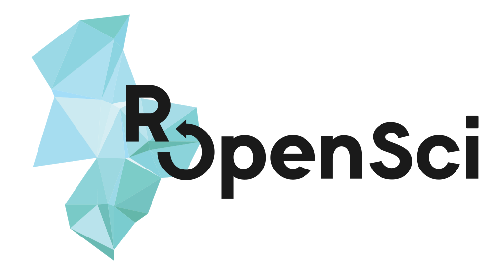

Biodiversity & Taxonomy Software Tools in R
Scott Chamberlain ( @sckottie/@ropensci)
UC Berkeley / rOpenSci

scotttalks.info/bocc
pdf slides 960x720
pdf slides 1280x720
Keyboard shortcuts: press ?
LICENSE: CC-BY 4.0
ropensci.org
rOpenSci Does
Questions addressed using our software

Citations of rOpenSci Biodiv Software
Taxonomy
| package | citations |
|---|---|
| taxize | 71 |
| rentrez | 13 |
| ritis | 1 |
| taxa | 1 |
| worrms | 1 |
Occurrences
| package | citations |
|---|---|
| rgbif | 51 |
| rfishbase | 24 |
| spocc | 8 |
| rfisheries | 2 |
| rredlist | 2 |
| rvertnet | 2 |
| AntWeb | 1 |
| pangaear | 1 |
| rotl | 8 |
use case 1
Hodgins, K. A., Turner, et al. (2015). Comparative genomics in the Asteraceae reveals little evidence for parallel evolutionary change in invasive taxa. Mol Ecol, 24(9), 2226–2240. 10.1111/mec.13026in the methods section:
... using the Encyclopedia of Life invasive species comprehensive list, which was accessed programmatically on August 12, 2014 using the taxize package in R .
use case 2
Hodgins, K. A., Turner, et al. (2015). Comparative genomics in the Asteraceae reveals little evidence for parallel evolutionary change in invasive taxa. Mol Ecol, 24(9), 2226–2240. 10.1111/mec.13026in the methods section:
... we used rOpenSci’s worrms package in R to standardize spellings of species names and synonyms ...
Taxonomy
taxa - Taxonomic classes and taxonomically aware data manipulation
taxize - Taxonomic "toolbelt" - work w/ taxonomy web APIs
taxizedb - taxize, but with local SQL databases
rentrez - NCBI's Entrez, including taxonomy
worrms - WORMS web service
ritis - USGS's ITIS web service
... many others
R taxonomy task view: github.com/ropensci/taxonomy
Taxonomic data from >20 sources - taxize
always try to move from:
taxonomic name -- to
taxonomic ID -- to
whatever other data
(e.g., synonyms, classifications, etc.)
Occurrence data
GBIF p.s.
we also maintain GBIF clients in Python and Ruby
future work /
hard problems
taxonomy tools: in the works
taxonomic name parsing: fast & platform independent for other R tool builders & tools for R users (see
pegaxposter)package taxa: needs more user testing - feedback plz!
package taxadc: serialize R taxonomic data to Darwin Core- in early development
package taxizedb - hard to a) make similar interface to SQL DB's as web services & 2) simplify varied database installs
package taxview - summarise and visualize data sets from with respect to taxonomy
Summarise/visualize data sets by taxonomy
coming ...
occurrence tools: in the works
taking the pain out of GBIF downloads: ropensci/rgbif#266: queuing tool for GBIF downloads - hard problem
occurrence cleaning in R: hard problem! A few efforts:
package scrubr
package CoordinateCleaner
deduplication badly needed: aggregation up the data provider ladder
occurrence tools: questions
DOIs for GBIF search service (and other services)?
related to above: Sharing dataset associated with paper
Visualzing huge occurrence datasets? (GBIF map API now in dev ver of
rgbif)